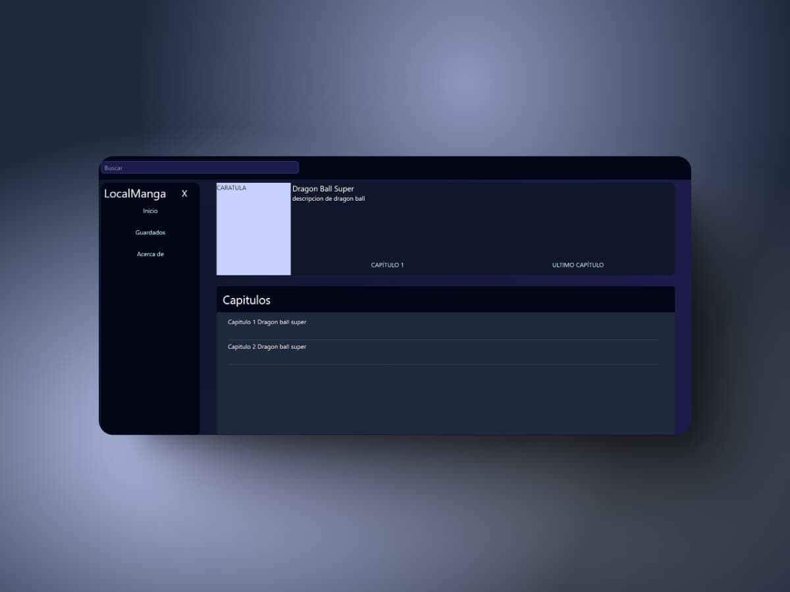

My Projects

LocalManga (Work in progress)
Angular
Spring Boot
MySQL
Tailwind CSS
LocalManga is a manga reading application designed to work entirely offline. Created as a hobby project for learning purposes, its goal is to serve as a frontend where all images from stored manga chapters can be displayed in an organized manner. By operating locally, it avoids any external conflicts